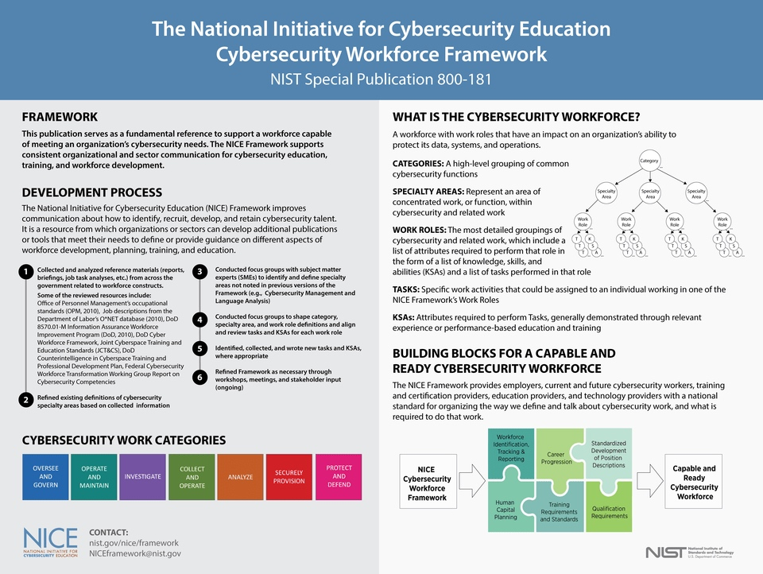
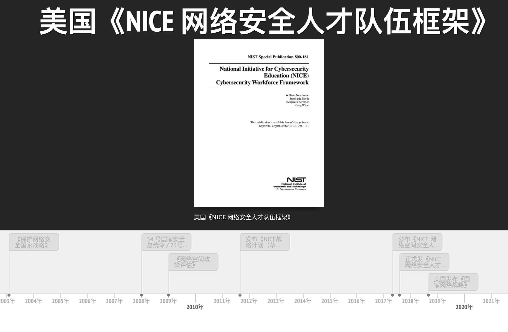
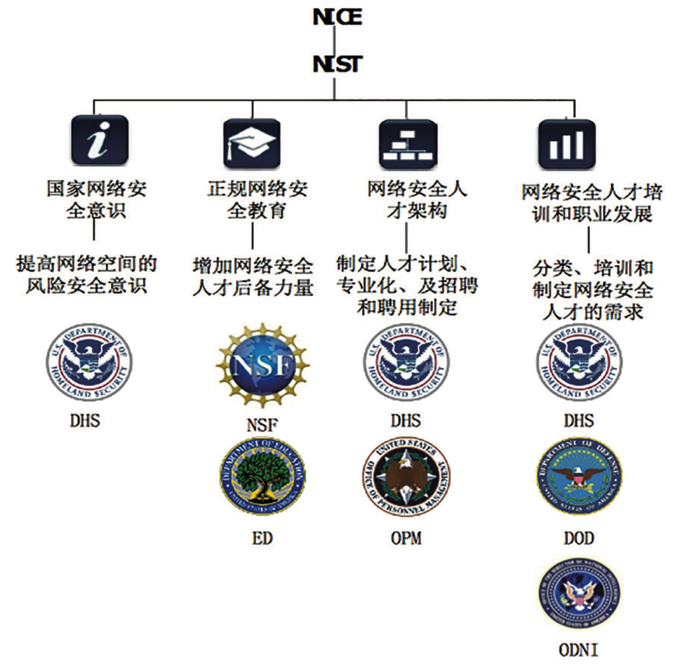
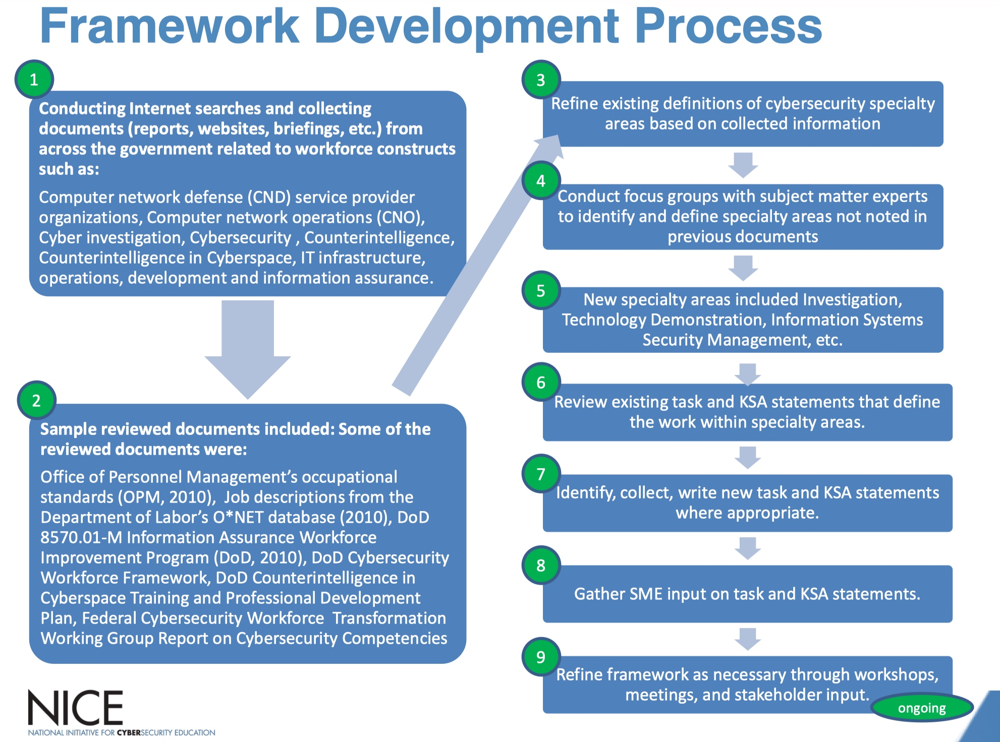
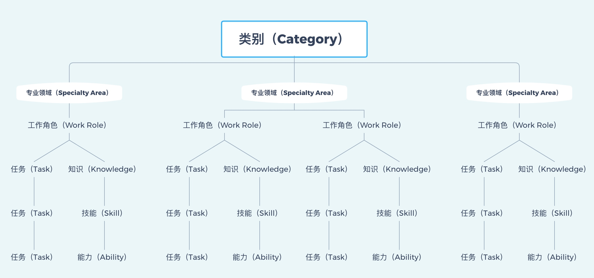
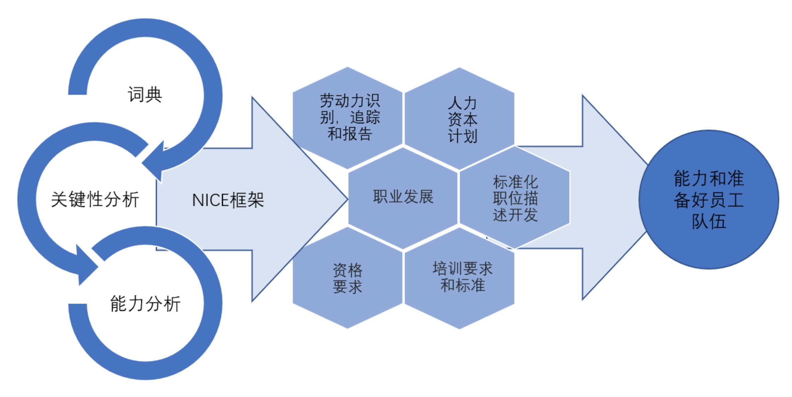

经过历时七年业界范围内的广泛讨论，NIST 终于发布了《NICE 网络安全人才队伍框架》，这个框架是非常少数的对人这个生产里要素相关的重量级框架，非常值得阅读。
一、NICE 计划背景
2009 年之后，美国信息安全事件频发对未来美国社会、经济、国家安全造成严重影响。时任总统的奥巴马认为需要美国急需提高整个国家的网络空间安全意识和素养，启动了一系列的工作：
- 2010 年 4 月，美国启动“国家网络空间安全教育计划”（National Initiative of CybersecurityEducation，NICE），期望通过国家的整体布局和行动，在信息安全常识普及、正规学历教育、职业化培训和认证等三个方面开展系统化、规范化的强化工作，来全面提高美国的信息安全能力。
- 2011 年 8 月，美国国家标准技术研究院发布了《NICE 战略计划（草案）》，并在网上公开征集意见。
- 2011 年 9 月，公布《NICE 网络空间安全人才队伍框架（草案）》（NICE Cybersecurity Workforce Framework），并在网上公开征求各方意见。
- 2017 年 5 月，”总统签署了美国总统发布了“加强联邦网络和关键基础设施网络安全的行政命令”。在某种程度上，该命令指出，美国的政策是“支持网络安全和相关领域的技能人才的增长和维持，作为实现我们在网络空间目标的基础。””
- 2017 年 8 月，历时 7 年的讨论和修改，NIST 正式公布了《NICE 网络安全人才队伍框架》
- 2018 年 9 月，总统签署发布美国《国家网络战略》，再次强调要把培养卓越的网络安全人才队伍作为国家网络战略的重要目标。
2017 年 8 月，经过历时七年业界范围内的广泛讨论，NIST 终于发布了《NICE 网络安全人才队伍框架》（中文 v2.0、中文版 v1.8）。

国家网络安全教育计划是（NICE）由 NIST 牵头，国土安全局（DHS）、国防部（DoD）、教育部（ED）、美国国家科学基金会（NSF）、国家情报总监办公室（ODNI）、美国联邦人事管理局（OPM）等共同领导，旨在建立一个动态的、可持续的网络安全教育计划，目的是确保各级政府正确使用良好的网络安全实践活动，从而最终提升整个国家的安全态势感知能力。NICE 计划管理架构如下：

其中由 DHS 牵头的网络安全人才架构部分主要侧重于网络安全专业人才的管理。目的是评估工作人员的专业化水平，为预测未来网络安全需求推荐最佳的实践活动，为招募和挽留人才制定国家策略。
《NICE 网络安全人才队伍框架》通过对行业内分析各类组织的职位描述的分析（包括公开渠道、DoD 和联邦政府内部数据），并通过广泛、充分的行业内讨论对安全行业内的工作类型、专业领域、工作角色、知识、技能、能力和任务进行了体系化的梳理。

二、《NICE 网络安全人才队伍框架》的核心概念
《NICE 网络安全人才队伍框架》本身定义了一套包含通用的词汇、分类法及其他数据标准在内的共同语言，来帮助行业讨论和理解网络空间安全专业人员的工作和技能要求。
《NICE 网络安全人才队伍框架》用类别（Category）、专业领域（Specialty Area）和工作角色（Work Role）这三类组件来描述网络空间安全工作，并且定义了四类组件来为每个工作角色定义相关的网络空间安全知识（Knowledge）、技能（Skill）、能力（Ability）、任务（Task）。
用多个《NICE 网络安全人才队伍框架》组件来描述信息技术（IT）、网络空间安全和网络空间相关工作。每个类别下有多个专业领域的分支，每个专业领域下又有多个岗位角色的分支，每个 岗位角色又是由大量独立的工作职责和与之对应的 KSA（“知识”、“技能”、“能力”的统称） 组成。特别说明的是，KSA 序号 K0001 到 K0006 是所有网络空间安全活动的核心，适用于每一个岗位角色。

- 类别（Category）：《NICE 网络安全人才队伍框架》的顶层概念（和职位头衔无关），一共有 7 个类别。每个类别都由专业领域（Specialty Area）和岗位角色（Work Role）组成。
- 专业领域（Specialty Area）：各个类别下包含的网络空间安全工作分组被称为专业领域（Specialty Areas）。在 v1.0 框架中有 31 个专业领域，在 v2.0 框架中有 32 个专业领域。每个专业领域代表了网络空间安全领域的一类专门工作职能。
- 工作角色（Work Role）：是 IT、网络空间安全或网络空间相关工作最细化的分组。工作角色阐明了从业人员完成规定职能和职责所必须具备的知识、技能和能力。一个网络安全从业人员一般承担了一个或者多个工作角色并履行相关职责。
- 任务（Task）：每个工作角色都需要通过完成一些任务来履行其职责。
- KSA（知识、技能和能力）：KSA（知识、技能和能力）是完成一项工作必需的属性，一般通过相关的工作经验、教育背景或培训经历体现。为每个岗位角色清晰定义了胜任该职责和职能所必需具备的任职资历和能力。
三、《NICE 网络安全人才队伍框架》核心内容
《NICE 网络安全人才队伍框架》中核心内容如上图，其中涉及 7 大类别的 32 个专业领域，38 种工作角色的 1007 类任务所需的 1180 种知识、技能和能力（KSA）。

其中，类别是围绕不同的目标对专业领域进行了分类所形成的：
- 安全交付（Securely Provision）：概念化、设计、采购和（或）构建安全的信息技术系统，包括系统和（或）网络开发的各个方面。个人感觉主要是 SDLC 相关的工作。
- 运营与维护（Operate and Maintain）：提供必要的支持、管理和维护，以确保有效和高效的信息技术系统性能和安全性。个人感觉主要是日常基础设施维护相关的工作。
- 监管与治理（Oversee and Govern） ：提供领导、管理、指导（或开发和宣传），以便组织能够有效地开展网络安全工作。个人感觉主要是合规与规划相关的工作。
- 保护与防御（Protect and Defend）：识别、分析和减轻对内部信息技术系统和（或）网络的威胁。个人感觉主要是入侵检测、防护，漏洞管理等相关的工作。
- 分析（Analyze）：对输入的网络安全信息进行高度专业化的审查和评估，以确定其对情报的有用性。个人感觉主要是威胁情报和渗透测试相关的工作。
- 搜集与行动（Collect and Operate）：提供可用于开发情报的网络安全信息的收集，提供专门的拒止和欺骗行动。个人感觉主要是红队与反制相关的工作。
- 调查（Investigate）：调查与信息技术系统、网络和数字证据有关的网络安全事件或犯罪。个人感觉主要是司法取证相关的工作。
四、《NICE 网络安全人才队伍框架》相关工具

组织可以使用 NICE 框架来定义组织、岗位、任职要求等一系列与网络空间安全人员管理和人员的选用育留相关政策。除此之外，NIST 等组织还提供了一系列的工具：
- NICE 框架的电子表格：包含了 NIST SP 800-181 中所有的概念的定义。
- 美国国土安全部网络安全劳动力开发工具包：帮助组织了解自身的网络空间安全工作人员和员工需求，可帮助组织进行网络空间安全人才盘点，可帮助组织评估其网络安全人力规划能力的成熟度。
- Baldrige 网络空间卓越构建工具：组织绩效自评工具。
- PushbuttonPD 职位描述起草工具：协助用户按照 NICE 框架起草职位描述
五、其他
在企业环境中，无论是业务、攻击者（对手）、计算环境、监管中的哪一个发生变化，安全都需要随之而变。个人认为正因为这种快速变化，导致安全行业各个层面都缺乏共同语言，甚至对行业发展产生了一些不良的影响。这是一个全球范围的现象，美国的 NIST、MITRE 等组织正在尝试通过 《关键基础设施网络安全框架》、ATT&CK、《NICE 网络安全人才队伍框架》等一系列的工作从不同层面来解决这个问题。特别是 NIST 新开发的重量级框架中都尤其重视制定的标准/指南/框架中经常看到专门的章节来描述如何与其他标准/指南/框架关联在一起使用。
资料
- Executive Order 13800
- NICE Cybersecurity Workforce Framework
- DoD Cyber Workforce
- National Initiative for Cybersecurity Education (NICE) Cybersecurity Workforce Framework (NIST.SP.800-181)
- 正式发布 v2.0 中文翻译
- 草案 v1.8 中文翻译
- National Initiative for Cybersecurity Education (NICE) Framework Work Role Capability Indicators: Indicators for Performing Work Roles
- NICE Cybersecurity Workforce Framework 101
- Cyber Security Work Roles
- NICCS workforce development